Beef Wellington is a dish in which, a cutlet of beef tenderloin is first coated in mustard/patè, then covered with duxelles(mushroom mince) and wrapped around a puff pastry, then it is ultimately cooked in a pre-heated oven
Season the beef generously with salt and pepper.
Heat 2 tablespoons of oil in a large pan on high heat.
Sear the beef in the pan on all sides until well browned,
about 2 to 3 minutes per side.
(Hint: do not move the beef until it has had a chance to brown.)
Remove the beef from the pan and let cool.
Once cooled, brush the beef on all sides with mustard.
Chop the mushrooms and put them into a food processor.
Pulse until very finely chopped.
Heat the sauté pan on medium-high heat.
Transfer the mushroom mixture into the pan and cook, allowing
the mushrooms to release their moisture, 10 to 15 minutes.
When the moisture released by the mushrooms has all boiled away,
remove the mushrooms from the pan and set aside to cool.
Roll out a large piece of plastic wrap.
Lay out the slices of ham on the plastic wrap so that they
overlap and are large enough to wrap around and encapsulate
the beef.
Spread the mushroom mixture over the ham.
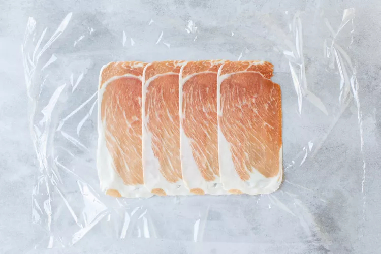
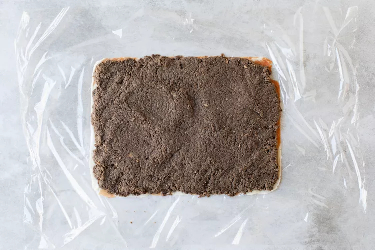
Place the beef in the middle and roll the mushroom and ham
over the beef, using the plastic wrap so that you do this
tightly.
Wrap up the beef into a tight barrel shape, twisting the
ends of the plastic wrap to secure.
Refrigerate for 20 minutes.
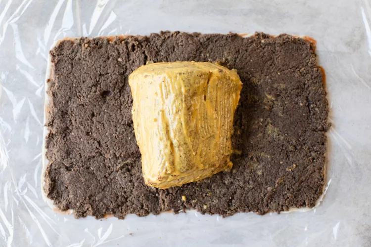
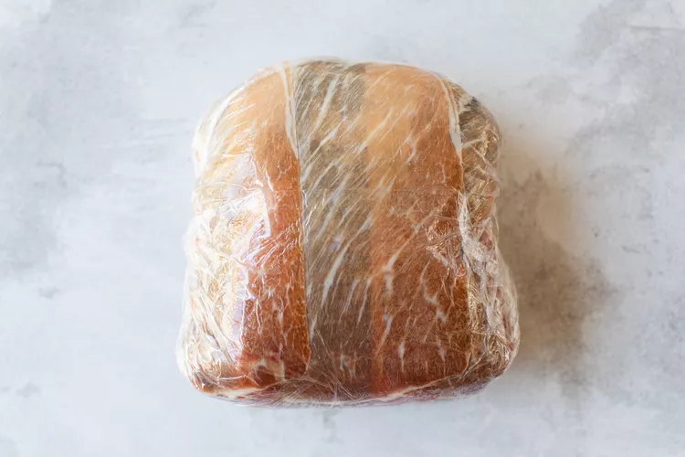
On a lightly floured surface, roll out the puff pastry sheet
to a size that will wrap around the beef.
Unwrap the beef from the plastic wrap and place in the
middle of the pastry dough.
Brush the edges of the pastry with the beaten egg yolks.
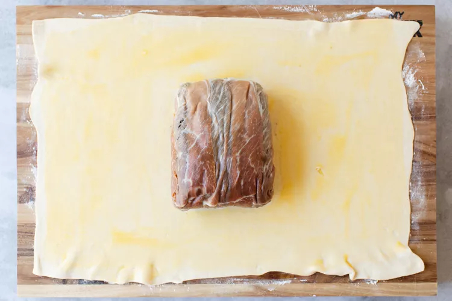
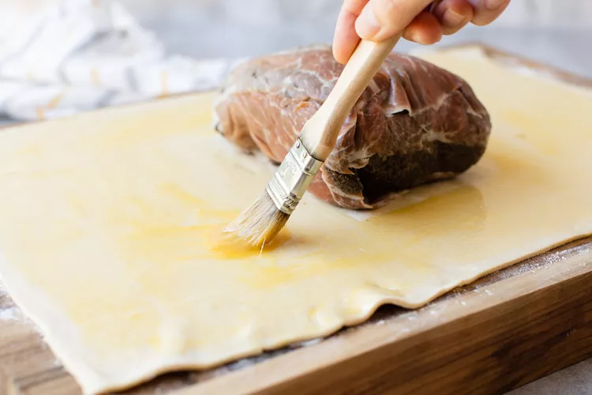
Fold the pastry around the beef, cutting off
any excess at the ends.
(Pastry that is more than 2 layers thick will not cook
all the way, try to limit the overlap.)
Place on a small plate, seam side down,
and brush beaten egg yolks all over the top.
Chill for 5 to 10 minutes.
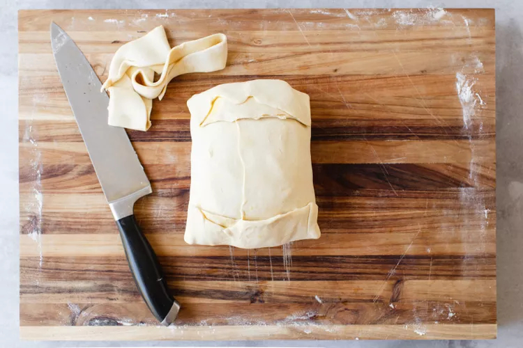
Place the pastry-wrapped beef on a baking pan.
Brush the exposed surface again with beaten eggs.
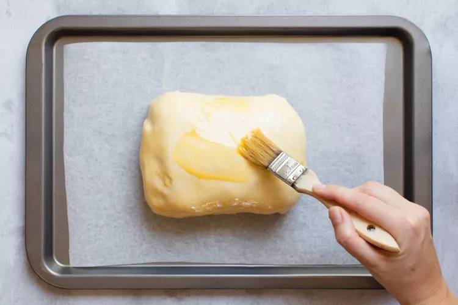
Score the top of the pastry with a sharp knife,
not going all the way through the pastry.
Sprinkle the top with coarse salt.
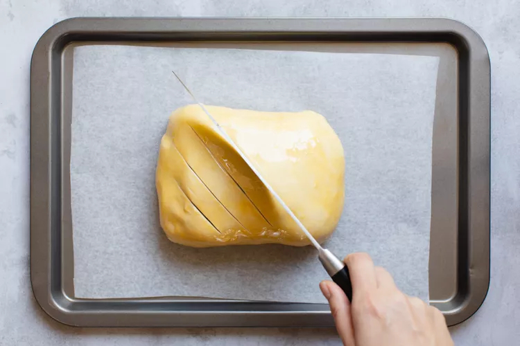
Bake at 400°F for 25 to 35 minutes.
The pastry should be nicely golden when done.
To ensure that your roast is medium rare, test with
an instant read meat thermometer.
Pull out at 125 to 130°F for medium rare.
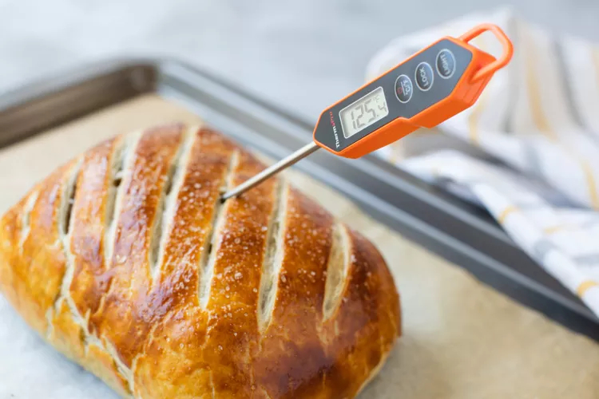
Remove from oven and let rest for 10 minutes before slicing.
Slice in 1-inch thick slices.
Leftover slices can be stored in the fridge for up to 2 days.
Wrap tightly with foil and reheat in a 350°F oven.
Once warm, remove the foil and bake for a few minutes more
to crisp the pastry.
Note that reheated slices will be closer to medium or
well-done.
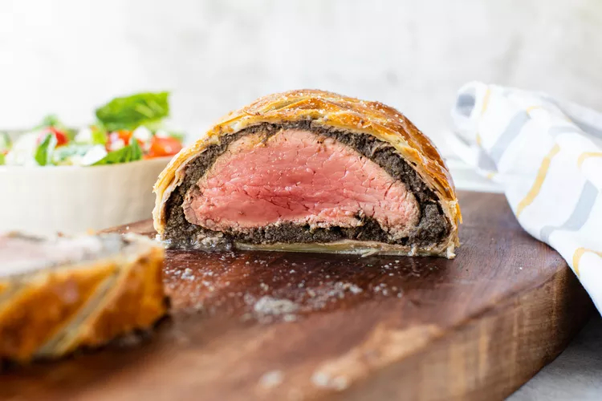